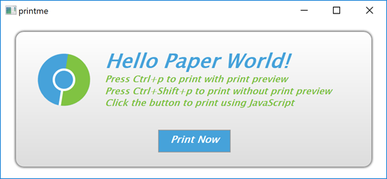

WebEngine Widgets PrintMe Example
Demonstrates how to print web pages using Qt WebEngine Widgets.

PrintMe demonstrates how to use the QWebEnginePage and QPrintDialog classes to print a web page. Further, it shows how to implement print preview by using the QPrintPreviewDialog class. For completeness, it also illustrates how to trigger a printing request within JavaScript.
Running the Example
To run the example from Qt Creator, open the Welcome mode and select the example from Examples. For more information, visit Building and Running an Example.
Simple HTML Page
In this example, we create an internal HTML page that is added as a resource collection file (.qrc). The page shows only a small HTML message box that explains how to trigger printing by using keyboard shortcuts or clicking a button. The button has the JavaScript onclick event attribute that calls the JavaScript window.print() function.
<html lang="en">
<head>
<meta charset="utf-8">
<title>PrintMe</title>
<link rel="stylesheet" type="text/css" href="style.css">
<script>
function printNow() {
window.print();
}
</script>
</head>
<body>
<form class="form">
<img class="logo" src="icon.svg" alt="qtwebengine">
<div class="header">
<h1>Hello Paper World!</h1>
<h2>Press Ctrl+p to print with print preview</h2>
<h2>Press Ctrl+Shift+p to print without print preview</h2>
<h2>Click the button to print using JavaScript</h2>
<p class="button" onclick="printNow()">Print Now</p>
</form>
</body>
</html>
Main Function
In the main function, we first instantiate a QWebEngineView and set the URL to our internal HTML page. Next, we create a PrintHandler instance and pass the requested page. For convenience, we also create keyboard shortcuts that can be used to call a print dialog or print preview dialog.
QWebEngineView view;
view.setUrl(QUrl(QStringLiteral("qrc:/index.html")));
view.resize(1024, 750);
view.show();
PrintHandler handler;
handler.setPage(view.page());
auto printPreviewShortCut = new QShortcut(QKeySequence(Qt::CTRL + Qt::Key_P), &view);
auto printShortCut = new QShortcut(QKeySequence(Qt::CTRL + Qt::SHIFT + Qt::Key_P), &view);
QObject::connect(printPreviewShortCut, &QShortcut::activated, &handler, &PrintHandler::printPreview);
QObject::connect(printShortCut, &QShortcut::activated, &handler, &PrintHandler::print);
Print Handler
In the PrintHandler function, we first implement printPreview(), where we instantiate QPrinter together with QPrintPreviewDialog. We need the QPrintPreviewDialog::paintRequested handle to generate a set of preview pages.
void PrintHandler::printPreview() { if (!m_page) return; if (m_inPrintPreview) return; m_inPrintPreview = true; QPrinter printer; QPrintPreviewDialog preview(&printer, m_page->view()); connect(&preview, &QPrintPreviewDialog::paintRequested, this, &PrintHandler::printDocument); preview.exec(); m_inPrintPreview = false; }
Now we can implement the PrintHandler::printDocument() slot, which is called in response to the QPrintPreviewDialog::paintRequested signal.
void PrintHandler::printDocument(QPrinter *printer) { QEventLoop loop; bool result; auto printPreview = [&](bool success) { result = success; loop.quit(); }; m_page->print(printer, std::move(printPreview)); loop.exec(); if (!result) { QPainter painter; if (painter.begin(printer)) { QFont font = painter.font(); font.setPixelSize(20); painter.setFont(font); painter.drawText(QPointF(10,25), QStringLiteral("Could not generate print preview.")); painter.end(); } } }
To do actual painting on a printer, we call the QWebEnginePage::print() function. Because this call blocks the main event loop, we need to create a local one. We begin the local event loop by calling QEventLoop::exec(). When the local event loop terminates, we check for result and report any errors that occurred.
The last function we implement, PrintHandler::print(), is trivial, because it simply opens QPrintDialog and calls the previously implemented PrintHandler::printDocument().
void PrintHandler::print() { QPrinter printer(QPrinter::HighResolution); QPrintDialog dialog(&printer, m_page->view()); if (dialog.exec() != QDialog::Accepted) return; printDocument(&printer); }